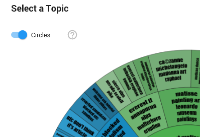

From the navigation tree, select Assisted Review.

 and then select
+ Add Project).
and then select
+ Add Project).

- Define a Project Name.
Select the arrow next to Select Project Search Query, click Saved Searches and select the Saved Search for the data to include in this project.

- Select Use Topic Modeling.
- Click Create.
After the project has been created, the topic overview is shown in the Topic Modeling tab.
